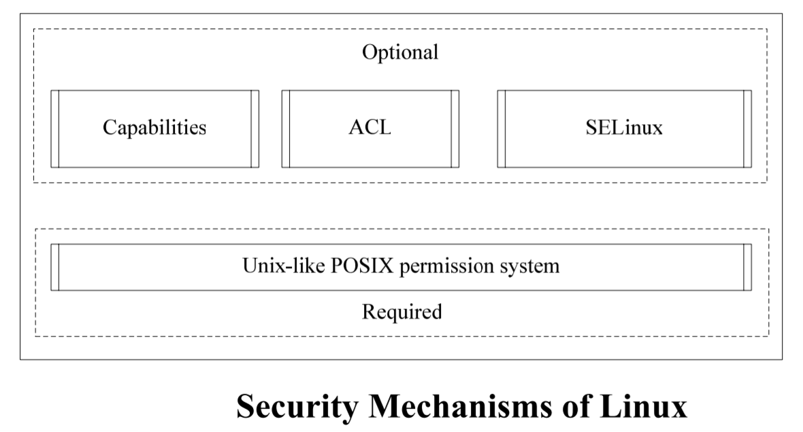
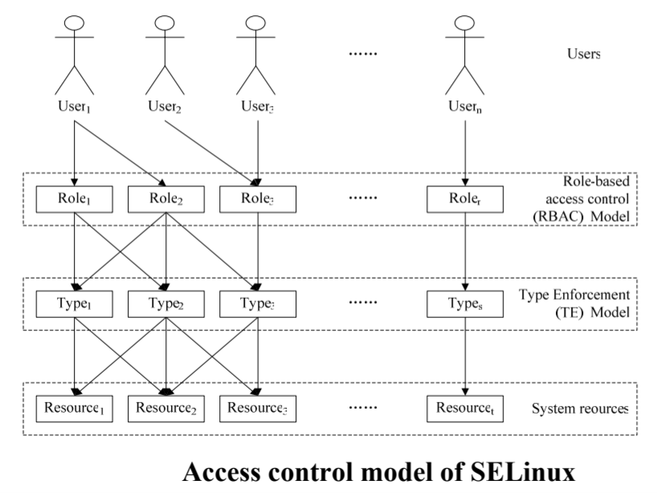
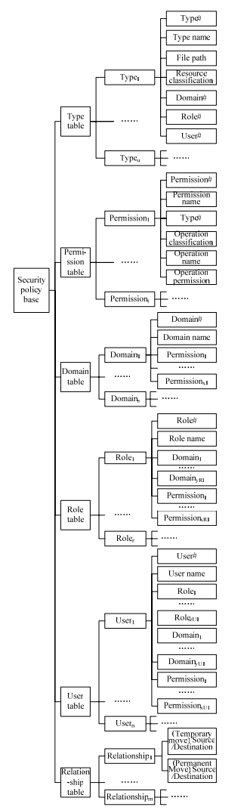

Security & Access Mechanisms inside Linux Kernel
Security & Access Mechanisms inside Linux Kernel
It's well-known that information security is supported and safeguarded by security of information systems whose infrastructure are made up of operating systems and hardware architectures. Thus security of operating systems are being attached more and more importance to and great effort are taken to build upsecure operating systems (SOSs) or consolidate security of current operating systems by introducing series of secure mechanisms. Therefore, it is very important and necessary to analyze and study security mechanisms provided by an operating system. Currently, Linux is becoming one of the most popular operating systems because of its excellent performance and open source philosophy. Since lots of individuals and enterprises are switching to Linux, access control mechanism of Linux has been improved from time to time for new security requirements. For instance, SELinux sub-system can enforce a policy based Mandatory Access Control (MAC) and provide flexible security policy configuration. However, there are still some defects in current Linux access control mechanism. The main target of this paper is to analyze and improve access control mechanism of current Linux operating system. To achieve this goal, current Linux security mechanisms are analyzed at first, while permission division principle is summarized. Then a new MAC mechanism is devised based on some popular information security models such as RBAC, DTE and etc and it is characteristic of cross-layered permission assignment. Furthermore, a corresponding prototype system is designed and implemented by using Linux kernel security facilities and under FLASK architecture and it is mainly made up of a Linux kernel module, a security policy compiler and an XML schema for policy configuration. Finally, the prototype is tested, related results are analyzed and the functionality and feasibility of the MAC mechanism is verified while further research directions are summarized.
Human society is going through a digitized era because of the explosion of information technology. A great lot of information has been digitized and maintained centrally by information systems. More and more valuable and critical information are being managed by information systems. Hence, the security capability of an information system is now becoming bottleneck of an information system. On the other hand, security of an operating system is the precondition to guarantee security of an information system because operating system is the base and the kernel of an information system. Therefore, it is very important and necessary to study security mechanisms provided by an operating system.
The foremost target of information security is to assure data security which can be protected by enforcing access control. Currently, Linux is becoming one of the most popular operating systems because of its excellent performance and open source philosophy. Since lots of individuals and enterprises are switching to Linux, access control mechanism of Linux has been improved from time to time for new security requirements.
For instance, SELinux sub-system can enforce a policy based Mandatory Access Control (MAC) and provide flexible security policy configuration. However, there are still some defects in current Linux access control mechanism. The main target of this paper is to analyze and improve access control mechanism of current Linux operating system. To achieve this goal, available Linux security mechanisms ought to be analyzed at first.
Discretionary Access Control Mechanism of Linux
The foremost security mechanism inside Linux kernel is Unix-like POSIX permission system, and then capabilities and access control lists (ACL) permission are later introduced as optional components.
♎ Unix-like POSIX permissions system
Unlike a Microsoft ACE/DACL control system, Linux implements a Unix POSIX permissions system. In this system, every file and directory can have a combination of read, write and execute privileges and these permissions are represented numerically with different binary bits. At the same time, these permissions are organized and be set according to ownership, group membership and others. Although it is simple and convenient to configure the system permissions and the corresponding cost is saving. But its granule for permission control is too big to satisfy permission configuration requirement with fine granules. For example, it can't be used to define per-user or per-group permissions. Meanwhile, controlled objects are limited to files and the other potential objects such as processes are ignored. Furthermore, security identification information of a file can be modified dynamically during the system running period. In addition, the existence of super-user or administrator is the hidden trouble of system security.
♎ Capabilities
Capabilities are introduced in order to solve super-user problems. The essential principle of capabilities is to add a 32-bit permission map into process control block so as to control the corresponding process under given permissions. Because each bit is corresponding to a kind of permission, capabilities can describe at most 32 different permissions.
Capabilities have refined system permissions and can effectively control super-user under the precondition of proper configuration. And they can implement process-level permission control with compact but effective descriptions. However, they focus on subjects and objects are ignored and impaired. Moreover, they can not improve confidentiality of system data effectively and there is still a long way to reach the target of flexible security policy configuration.
♎ ACL
To configure the system permissions with wellfined granules, ACL can be employed. In another word, an access control list is equipped with each file as an extended attribute to describe all permissions for different subjects as to the file. It support assignment given permissions for special user. ACL improves flexibility of permission configuration with refined granules (subjects). But operation granules for permission are still rough and it requires excessive storage space to save ACL. Nevertheless, it can not control process-level permissions effectively.
Mandatory Access Control Mechanism of Linux (SELinux)
The up-to-date Linux kernel has been integrated with SELinux which enforces a MAC policy and its security performance is improved to a great extent.
♎ Architecture and Principle of SELinux
SELinux employs role-based access control (RBAC), type enforcement (TE) and a optional multilevel security (MLS) synthetically.
♎ Policy configuration of SELinux
Security policy configuration for SELinux is made up of definitions for TE access vector rules, RBAC rules and constraints rules. All of these are described in security policy description language provided by SELinux.
♎ Evaluation of SELinux
SELinux supports multiple security models and MAC policy. It is extensible and flexible with refined permission configuration. But it is the bottleneck of SELinux to configure the security policy of the system correctly. Moveover, flexibility of policy configuration is always weakened because there are close relationships among multiple models of SELinux. In addition, policy description and policy configuration of SELinux is too complicated to be mastered.
♎ A new Mandatory Access Control Mechanism
It can be concluded that permission/privilege division is the essential way to solve systematic security problem. In another word, security performance of a system is dependent on the way of permission/privilege division.
♎ LYSLinux Access Control Model
A hybrid access control model named LYSLinux is devised by integrating RBAC and Domain Type Enhancement (DTE) together.
Note that although the model is a layered permission assignment model, permissions can be assigned crossing layers, as is more consistent with that in real world. Naturally, it can simplify the security policy configuration. In addition, FLASK architecture ought to be adopted so as to ensure configurability of systematic permission and separation between access control and security policy.
♎ Description of Security Policy
The whole security model can be described by type table, permission table, domain table, role table, user table and relationship table. And the relationships among different tables are more like tree structure, which can be described in extensible mark language (XML).
♎ Storage and Management of Security Policy
All factors such as interaction modes between user space and kernel space, communication efficiency between MAC module and security server, and etc. are considered. Therefore, security server is running in kernel space and a special data structure is build up between security server and security policy base (in XML files) to store and describe security policy. When security module is start-up, security policy is read from file system and the data structure is initialized. And in order to be convenient for security server to build up security policy data structure, corresponding binary security policy description file format ought to be designed and the transformation from XML descriptive file to the binary file can be executed in user space.
♎ Prototype Implementation
Human society is going through a digitized era because of the explosion of information technology. A great lot of information has been digitized and maintained centrally by information systems. The foremost target of information security is to assure data security which can be protected by enforcing access control. Currently, Linux is becoming one of the most popular operating systems because of its excellent performance and open source philosophy. Since lots of individuals and enterprises are switching to Linux, access control mechanism of Linux has been improved from time to time for new security requirements.
The architecture of the prototype can be refered in the following figure. It is made up of security enforcer, object manager, AVC, security server and a kernel virtual char device. All components of access control modules are running in kernel space and can be implemented in a loadable kernel module.
In addition, the compiler of security policy is programmed in Java.
|
🌐 SUMMARY The prototype is tested and related results show that the MAC mechanism given here is functional and feasible. Nevertheless, some aspects ought to be improved in future. For example, security model can be improved to support role ranking, access control for resources other than files (such as special files, network operation) and even other file systems can be supported and security policy configuration tools can be develop to simplify the configuration work. |